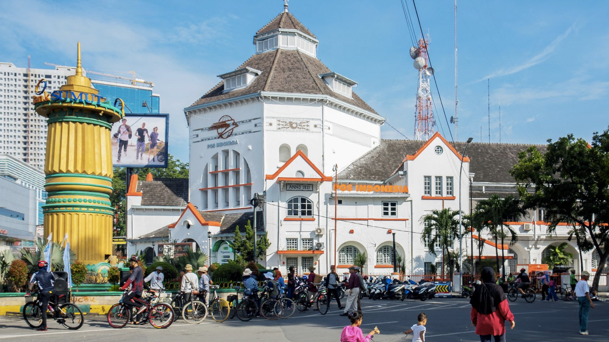

Medan, North Sumatera

The city of Medan is the capital of North Sumatra and the fourth largest city in Indonesia (after Jakarta, Surabaya and Bandung). With a population of two million, it is the largest city outside of Java. Tourists can expect a diversity of cultures in this city, as almost every ethnicity in the country is represented in this place: Acehnese, Batak, Chinese, Indians, Javanese, Malay and Minang, however, there is no ethnic group that is considered a majority.
For travellers, Medan is famous as the entry point to North Sumatra. Aside from serving as the gateway to the region, the city also functions as a commercial and economic hub; this Indonesian city attracts not only shoppers, but also business professionals and entrepreneurs. Medan is a modern metropolis and like other Asian cities, it can be very busy and suffer from heavy traffic.
Before Medan became a sprawling city, it was a trading and seafaring town under Islamic Malay leadership during its early days. It was in the 19th century when the city's commercial potential was uncovered. Because of plantation agriculture, Medan transformed from a small town to the prosperous city that it is today.